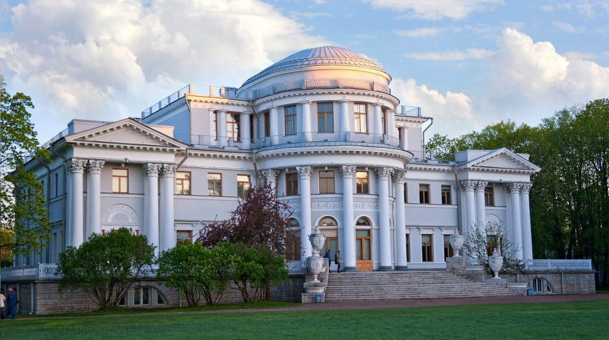
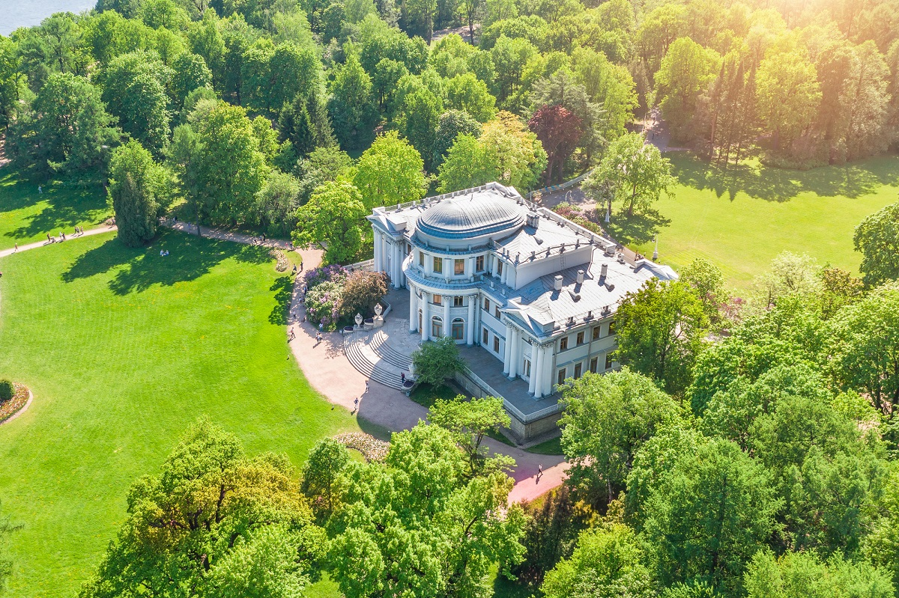

Елагин дворец — летний императорский дворец на Елагине острове в Санкт-Петербурге.

Названный Елагиным по имени своего первого владельца, он так и сохранил это название, несмотря на периодическую смену хозяев.
Дворец также называют Елагинским или Елагиноостровским.
В начале XIX века остров был выкуплен Александром I для своей матери императрицы Марии Фёдоровны.
Перестроить Елагин дворец было поручено знаменитому зодчему К. Росси.
Архитектор возвел на острове сразу несколько зданий: кроме увенчанного куполом трехэтажного дворца, там было выстроено три дополнительных павильона, а также Кухонный и Конюшенный корпуса.
